時季蜜
2時間限定採蜜の
国産非加熱はちみつ
100% JAPANESE RAW HONEY,
HARVESTED IN A LIMITED
2-HOUR WINDOW
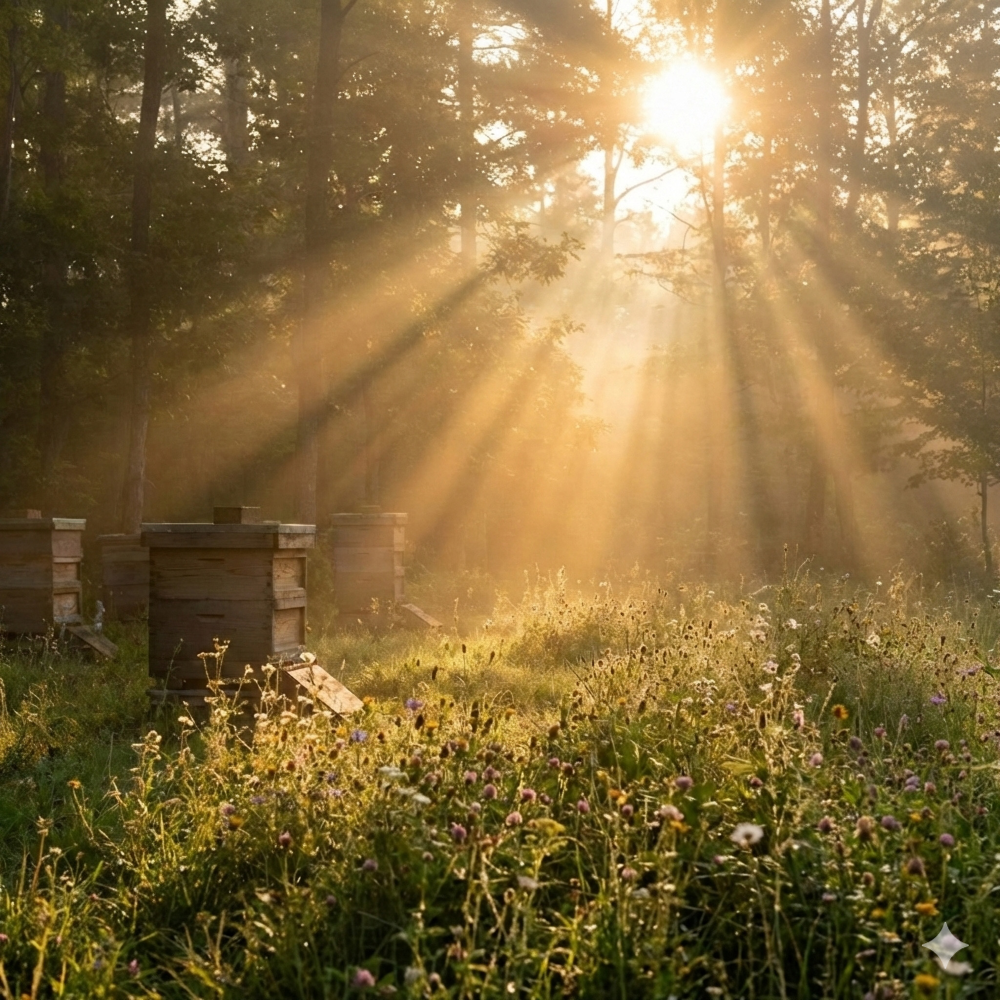
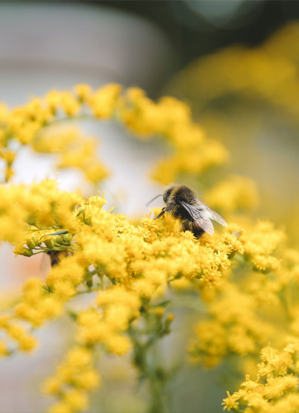
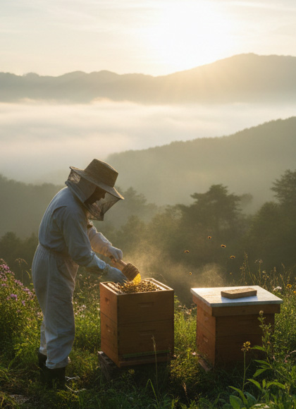
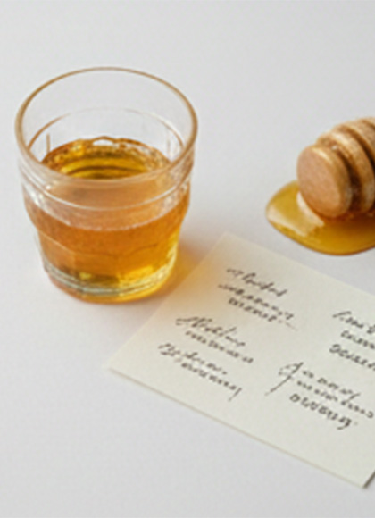
PROFILE
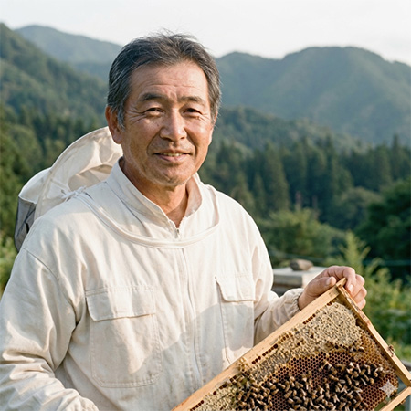
北アルプスの麓、長野県大町市にて養蜂を営む。「自然とミツバチに無理をさせない」伝統的な技法と、最新のデータ解析技術を融合。お客さまに安心して時季蜜を楽しんでいただくために、蜂蜜の味の背景にある情景までを可視化することに情熱を注いでいる。
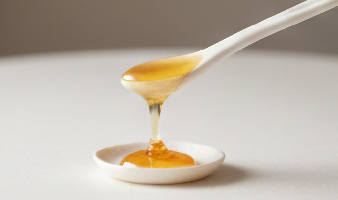
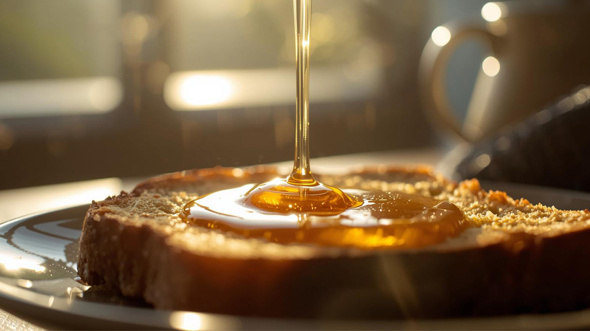
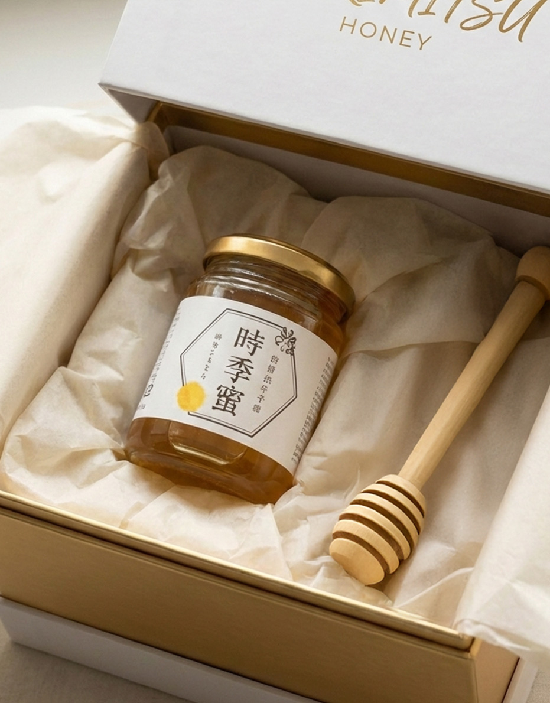
NOURISHING AND HEALING
REFRESH
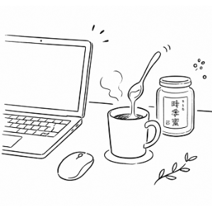
デスクで紅茶に一さじ。14時過ぎの集中力が切れる時間に、紅茶に溶かした時季蜜の酵素がエネルギー源に。脳をやさしく目覚めさせてくれます。
SELFCARE
1日の終わりにお湯割りはちみつ、ホットミルクやカモミールティーに。100%純正の甘さが、副交感神経を優位に。
MORNING
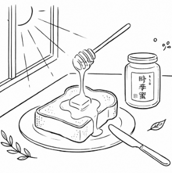
日の出前に採蜜された希少なはちみつを、一日で最もクリアな体に取り入れる贅沢。厚切りトーストにたっぷりの時季蜜で、「特別な自分」に戻る時間。
BENEFITS
01
/ DAWN HARVEST
希少な高純度はちみつへ
ミツバチが活動を始める前の、澄んだ時間帯だけに採蜜。不純物が少なく、雑味のない甘さだから、朝のヨーグルトやトーストにかけても重くなりません。忙しい朝でも、すっと身体に馴染む軽やかさです。
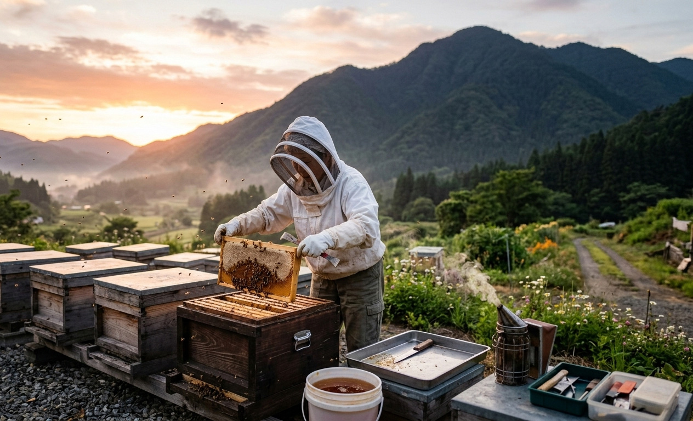
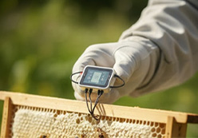
02
/ SAFETY
安心してお召し上がりいただくために
長野県大町市で採蜜したはちみつは、全て国内で生産・管理しております。採蜜日の気温や湿度も記録し、品質を可視化。お客様自身で産地や採蜜日、糖度などの品質データを、お手元の製造番号から確認いただけます。
第三者機関による残留農薬検査、抗生物質検査をクリア。検査結果は商品に同梱してお届けします。
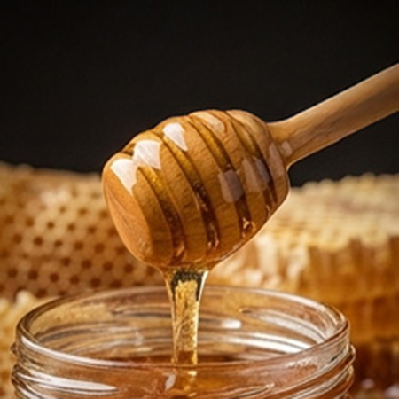
時季蜜は45℃以下の管理を徹底し、天然の酵素やビタミン、190種類以上の栄養成分を生きたままお届けします。
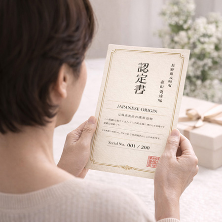
一般的な蜂蜜は加熱処理で安全性を確保しますが、時季蜜は非加熱のまま第三者検査をクリア。「加熱しなければ安全でない」という常識を覆し、製法へのこだわりが品質に直結しています。
検査機関：日本食品分析センター
採蜜日、採蜜場所、ロット番号をすべて記録。いつ、どこで採れた蜂蜜かを明確に追跡できます。
ロット番号：各瓶に記載
03
/ WITH CARE
環境にも大切な人にも優しく
パッケージに和紙を使用し、プラスチックを一切使わない緩衝材。森山養蜂場は、環境に配慮した取り組みを行っています。
一瓶一瓶、専任のスタッフが手作業で丁寧にパッキング。配送中の衝撃を最小限に抑え、美しい状態のままお届けすることをお約束します。
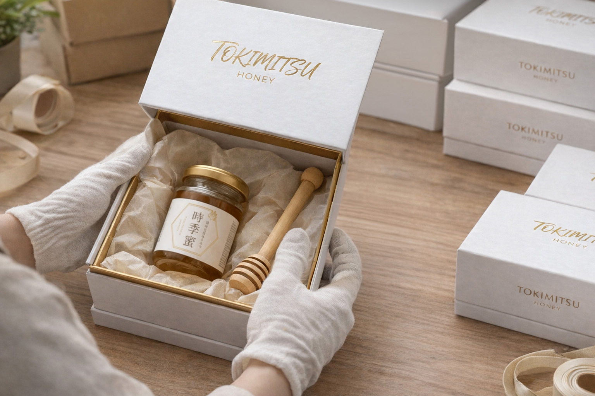
CUSTOMER REVIEWS
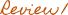
神奈川県O様
百貨店で色々試しましたが、ここまで雑味がなく澄んだ甘さは初めて。正直、価格に迷いましたが、一口で「これは違う」と感じました。今では朝の楽しみになっています。
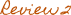
千葉県T様
毎朝ヨーグルトに入れて3週間。以前より朝が軽く感じます。家族にも安心して食べさせられるのが嬉しいです。
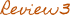
東京都A様
母の日に贈りました。箱を開けた瞬間、「素敵！」と。甘いものが得意でない母も、これは上品で美味しいと喜んでくれました。
FAQ
日が昇る前は、花粉や外気の影響を受けにくく、雑味のない澄んだ味わいになります。そのため、毎日食べても重たくならず、朝の習慣として続けやすいのです。
製造日より2年間です。直射日光を避け、常温保存していただければ、賞味期限を過ぎても品質に問題はありません。開封後はお早めにお召し上がりください。
はい、問題ございません。非加熱の天然蜂蜜は気温が下がると自然に結晶化します。これは品質の良い証です。45℃以下のぬるま湯で湯煎していただくと、元の液体状態に戻ります。
日の出前2時間のみの採蜜、非加熱処理、月300瓶限定の少量生産。手間と時間を惜しまず仕上げ、量よりも質を優先しております。
大切な体だからこそ、
嘘のない、本当に良いものを。
こだわりが詰まった一瓶は、
あなたを想う誠実さの証です。
森山養蜂場は、健やかで
心満たされる贅沢を届けます。
「自分を大切にする習慣」を、今日から。
New care habits for
your mind and body
ORDER
森山養蜂場 | 国産非加熱はちみつ
残り57瓶 - 今月の在庫限り